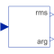
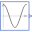
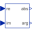

HarmonicCalculate harmonic over period 1/f |

|
Diagram
{kind=link}
Information
This information is part of the Modelica Standard Library maintained by the Modelica Association.
This block calculates the root mean square and the phase angle of a single harmonic k of the input signal u over the given period 1/f, using the mean block.
Note: The output is updated after each period defined by 1/f.
Note:
The harmonic is defined by √2 rms cos(k 2 π f t - arg) if useConjugateComplex=false (default)
The harmonic is defined by √2 rms cos(k 2 π f t + arg) if useConjugateComplex=true
Parameters (5)
| f |
Value: Type: Frequency (Hz) Description: Base frequency |
|---|---|
| k |
Value: Type: Integer Description: Order of harmonic |
| useConjugateComplex |
Value: false Type: Boolean Description: Gives conjugate complex result if true |
| x0Cos |
Value: 0 Type: Real Description: Start value of cos integrator state |
| x0Sin |
Value: 0 Type: Real Description: Start value of sin integrator state |
Connectors (3)
| u |
Type: RealInput |
|
|---|---|---|
| y_rms |
Type: RealOutput Description: Root mean square of polar representation |
|
| y_arg |
Type: RealOutput Description: Angle of polar representation |
Components (8)
|  | sin1 |
Type: Cosine |
|---|---|---|
| sin2 |
Type: Sine |
|
| product1 |
Type: MultiProduct |
|
| product2 |
Type: MultiProduct |
|
| mean1 |
Type: Mean |
|
| mean2 |
Type: Mean |
|
|  | rectangularToPolar |
Type: RectangularToPolar |
| gain |
Type: Gain |
Used in Examples (5)
|
Modelica.Electrical.PowerConverters.Examples.DCAC.MultiPhaseTwoLevel
Multi phase DC to AC converter with R load |
|
|
Modelica.Electrical.PowerConverters.Examples.DCAC.MultiPhaseTwoLevel
Multi phase DC to AC converter with R-L load |
|
|
Modelica.Electrical.PowerConverters.Examples.DCAC.MultiPhaseTwoLevel
Test of pulse width modulation methods |
|
|
Modelica.Electrical.QuasiStationary.SinglePhase.Examples
Rectifier example |
|
|
Modelica.Magnetic.QuasiStatic.FluxTubes.Examples
Non linear inductor with ferromagnetic core |
Used in Components (3)
|
Modelica.Blocks.Math
Output the total harmonic distortion (THD) |
|
|
Modelica.Electrical.PowerConverters.Examples.DCAC.ExampleTemplates
Single phase two level inverter including control |
|
|
FundamentalWavePermabilitySensor Modelica.Magnetic.QuasiStatic.FluxTubes.Sensors.Transient
Sensor of fundamental wave permeability |